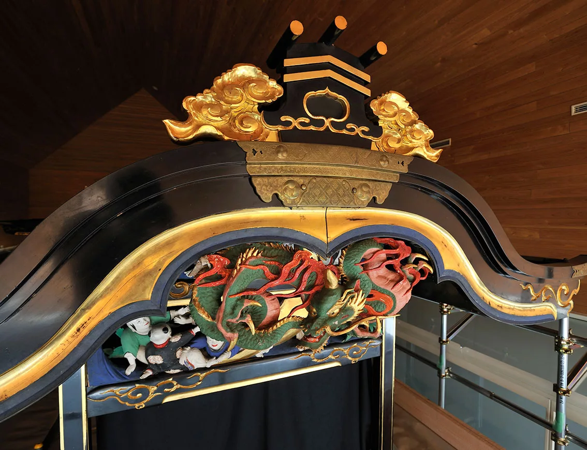
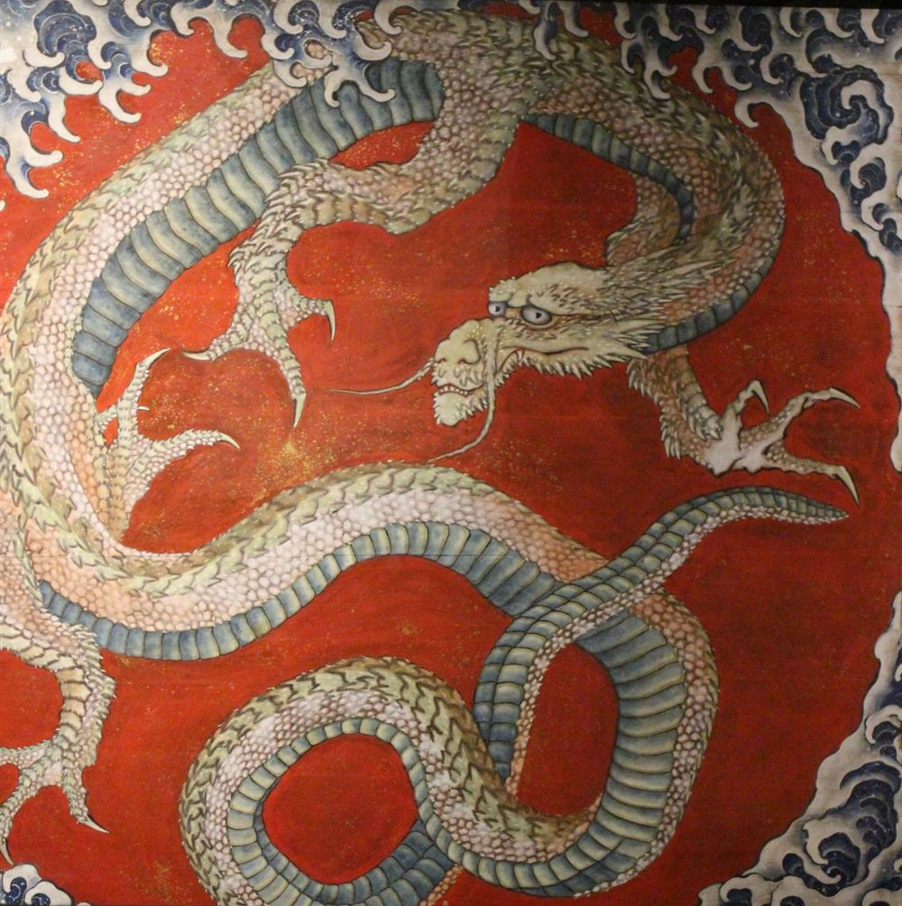
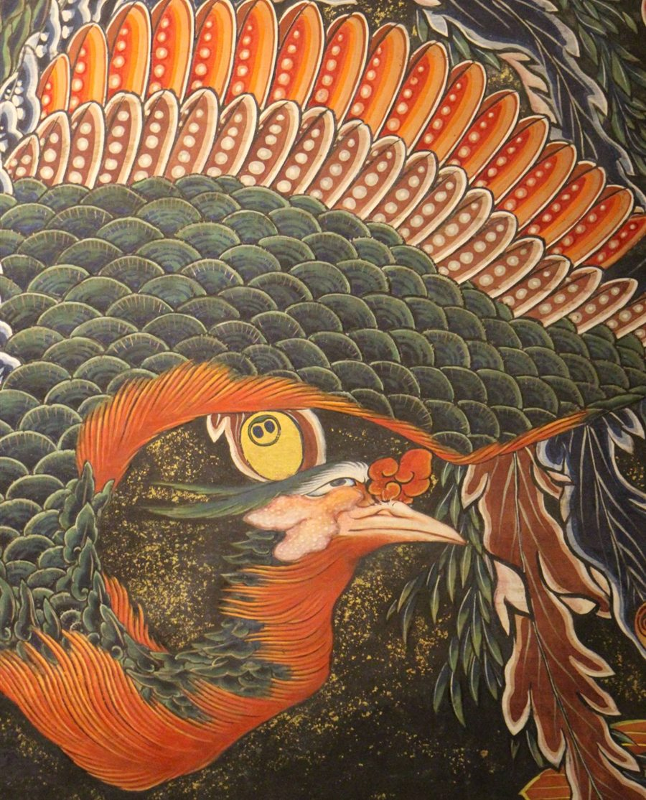
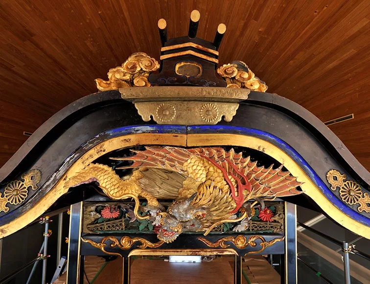
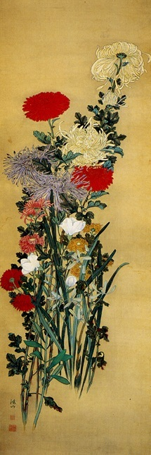
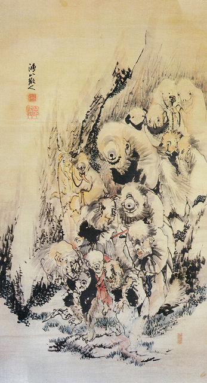
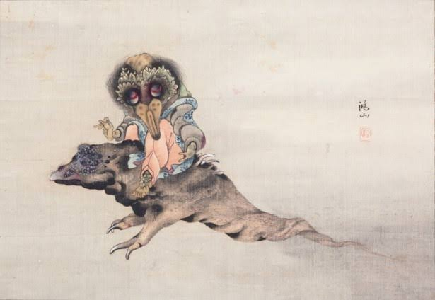
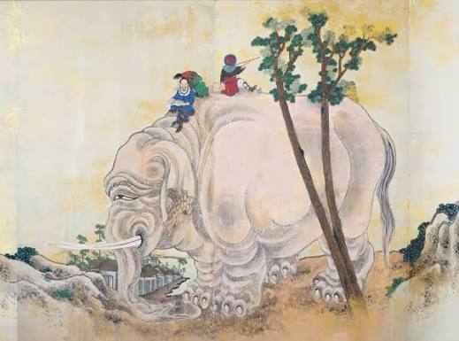

松川の上流は、草津白根山に近い、 かつて硫黄を掘った山。水は酸性が強く、 田んぼには向かなかった。The Matsukawa rises near Kusatsu-Shirane, where sulphur was once mined. Its water was too acidic for rice paddies.
扇状地は砂と石の土で、水はけがよい。 栗がよく育った。The fan is sand and gravel and drains fast. Chestnuts did well.
江戸時代、栗林は藩の「御林」として守られ、 栗は将軍家に献上された。In the Edo period the groves were guarded as domain forest, and the chestnuts went to the shogun.
伝承Legend室町時代、領主の荻野常倫が 故郷の丹波から栗を取り寄せたのが始まり、と伝わる。A 15th-century lord, Ogino Tsunetomo, is said to have brought chestnuts from his home province, Tamba.
1808年、栗の粉で作る菓子「栗落雁」が生まれる。 小布施の栗菓子の始まり。1808: kuri-rakugan, a sweet made from chestnut flour — the first of Obuse’s chestnut sweets.1日目 栗菓子工場Day 1 · chestnut sweets
3と8の付く日 月に6回Every date ending in 3 or 8: six a month
暴れ川の松川は、かつて町の真ん中を流れていた。The Matsukawa, a wild river, once ran through the middle of town.
江戸の初め、町の南東に「千両堤」が築かれ、 流れが変わった。洪水は大きく減った。In the early 1600s a levee, the Senryō-zutsumi, turned it aside. Floods fell sharply.伝承Legend福島正則が築いたと伝わる。正則の霊廟は岩松院にあるIt is credited to the warlord Fukushima Masanori, whose mausoleum is at Ganshō-in2日目 岩松院Day 2 · Ganshō-in
17世紀の初め、街道に沿って上町・中町・横町などの町並みができた。 越後と関東を結ぶ道の、結び目だった。Early in the 1600s, streets grew up along the highway — a knot in the roads between Echigo and the Kantō.
1640年代、3と8の付く日に市が立つ。 月に6回の「六斎市」。From the 1640s, a market on every date ending in 3 or 8 — six a month.
18世紀の後半には、北信濃でいちばん大きな市と言われた。By the late 1700s it was said to be the biggest market in northern Shinano.
上町の高井家は、酒・穀物・塩・茶を商い、 京の公家・九條家の御用も務めた。 近くの藩には、お金を貸した。The Takai house traded sake, grain, salt and tea, served the Kujō court family in Kyoto, and lent money to nearby domains.
富のあるところに、文人が来た。 俳人の小林一茶は、小布施のあたりに239泊している。Where there was money, writers came. The haiku poet Issa spent 239 nights in and around Obuse.2日目 岩松院（一茶の句碑）Day 2 · Ganshō-in (Issa’s frog pond)
1806年3月、その高井家に 男の子が生まれる。In March 1806, a boy was born into the Takai house.
第二章 若者II · The young man
16年 years
15歳から31歳 京都と江戸で学ぶFrom 15 to 31, in Kyoto and Edo
1820年、15歳で京都へ。 書・絵・和歌・儒学を学ぶ。1820, at 15: to Kyoto, for calligraphy, painting, poetry and Confucian learning.
1827年、ふたたび京都。 漢詩を梁川星巌に学ぶ。1827: Kyoto again, writing Chinese verse under Yanagawa Seigan.
1833年、江戸。佐藤一斎に学ぶ。 同じ門下に佐久間象山がいた。1833: Edo, under Satō Issai. Sakuma Shōzan studied there too.伝承Toldこのころ、江戸で北斎と知り合ったとされるHe is said to have met Hokusai in Edo around then
学んだら、行う。 陽明学の「知行合一」が、彼の芯になった。Learn, then act. “Knowledge and action are one” became his core.
蔵を開く。He opened the storehouses.
1836 天保の大飢饉 31歳1836 · The Great Tenpō Famine · age 31
江戸から帰った年に、天保の大飢饉が来た。 鴻山は父と倉を開き、飢えた人々を救った。The year he came home, the Great Tenpō Famine struck. With his father he opened the storehouses to the hungry.
53年前の天明の飢饉でも、祖父が蔵を開いていた。 404両あまりを献じ、600両を利息なしで貸し、 籾300俵を安く売った。In the famine of 1783 his grandfather had done the same: he gave 404 ryō, lent 600 without interest, and sold 300 bales of rice cheaply.
幕府はその功に「高井」の姓を許した。 この家には、蔵を開く前例があった。For that, the shogunate granted the family the name Takai. This house had opened its storehouses before.2日目 高井鴻山記念館 籾を蓄えた蔵が一棟残るDay 2 · Kōzan Memorial Museum: one of the rice storehouses still stands
葛飾北斎『鳳凰』Katsushika Hokusai, “Phoenix”
第三章 画狂老人III · The old man mad about painting
1842年（天保13年）秋 信濃国 小布施村Autumn 1842 · Obuse, Shinano Province
37
鴻山Kōzan
+46
83
北斎Hokusai
江戸から、83歳の北斎が小布施に来た。 迎えたのは37歳の鴻山。46歳の差である。Hokusai, 83, came from Edo. His host, Kōzan, was 37 — forty-six years younger.
江戸では天保の改革で、絵への取り締まりが厳しくなっていた。 鴻山は、北斎が自由に描ける場所を用意した。In Edo, the Tenpō Reforms were cracking down on lavish pictures. Kōzan gave him a place to paint freely.高井鴻山記念館の説明による。来た理由には諸説あるAs the Kōzan Memorial Museum explains it; there are other theories
北斎は75歳のとき、こう書いている。At 75, Hokusai had written:
八十歳にしては益々進み 九十歳にて猶其奥意を極め 一百歳にして正に神妙ならん歟 百有十歳にしては 一点一格にして生るがごとくならんAt eighty I will have improved still more; at ninety I will reach the heart of it; at a hundred, perhaps, the divine. At a hundred and ten, every dot and every line will be alive.
『富嶽百景』あとがき（1834年）Afterword to One Hundred Views of Mt Fuji, 1834
83歳は、 まだ途中だった。At 83, he was not done.
1844–1849 小布施と江戸1844–1849 · Obuse and Edo
小布施で描いたものWhat he painted here
北斎Hokusai
85歳
鴻山 39歳Kōzan, 39
1844

東町祭屋台Higashimachi float

天井絵『龍』Ceiling: Dragon

天井絵『鳳凰』（部分）Ceiling: Phoenix (detail)
東町の祭屋台の天井に、『龍』と『鳳凰』。For the ceiling of the Higashimachi festival float: a dragon and a phoenix.
1日目 北斎館Day 1 · Hokusai Museum

上町祭屋台Kanmachi float天井絵「男浪・女浪」Ceiling: the two waves
上町の祭屋台。鴻山が私財で建て、天井を北斎に任せた。大波の『男浪』と『女浪』。The Kanmachi float: Kōzan paid for it and gave Hokusai the ceiling — two great waves, “Male” and “Female.”
縁の花鳥は、北斎の下絵に鴻山が色を塗ったと考えられている。この年は3月から9月まで、半年あまり滞在したとみられる。The flowers and birds on the border are thought to be Kōzan’s colouring over Hokusai’s drawing. That year Hokusai seems to have stayed from March to September.
1日目 北斎館Day 1 · Hokusai Museum
岩松院の本堂の天井に『八方睨み鳳凰図』。畳21枚分。The Phoenix on the ceiling of Ganshō-in’s main hall: the size of 21 tatami mats.
完成は1848年、北斎89歳とされる。寺によれば、約1年をかけて描かれ、一度も塗り替えていない。Finished, it is thought, in 1848, when he was 89. The temple says it took about a year and has never been repainted.
2日目 岩松院Day 2 · Ganshō-in
1849年4月、江戸で没。90歳。April 1849: he died in Edo, at 90.
天我をして五年の命を保たしめば 真正の画工となるを得べし“If heaven would grant me five more years, I could become a true painter.”
「天があと5年の命をくれたら、本物の絵描きになれるのに」。最期の言葉と伝わる（飯島虚心『葛飾北斎伝』）。His last words, as reported in an 1893 biography.
絵に、のめり込んだ。Lost in painting.
花鳥、山水、人物。晩年は、妖怪をたくさん描いた。Flowers and birds, landscapes, people — and, later in life, many yōkai.

花Flowers

妖怪Yōkai

妖怪Yōkai
「目を閉じると、 妖怪が現れる」“When I close my eyes, the yōkai appear.”
伝承Told鴻山はそう言ったというSo Kōzan is said to have put it
高井鴻山の妖怪画（部分）Yōkai by Takai Kōzan (detail)

『象と唐人図』 北斎の下絵をもとに、鴻山が描いた屏風“Elephant and Chinese Men”: a screen Kōzan painted from Hokusai’s drawing
2日目 高井鴻山記念館Day 2 · Kōzan Memorial Museum
第四章 お金の使い方IV · How he used his money
献金・融資・支援Gifts, loans, patronage
融資Loans
藩Domains
松代・飯山・須坂などの藩に、お金を貸したLent to Matsushiro, Iiyama, Suzaka and other domains
頼まれれば、利息をとらずに貸したLent to people without interest when asked
献金Gifts
500両
1847 善光寺大地震の救恤金1847 · relief after the Zenkōji earthquake
100両
1847 九條家の娘の入内に1847 · for a Kujō daughter entering the court
籾Rice
1853 品川台場の築造に1853 · for the Shinagawa forts
献金Gift
1860 和宮の降嫁に1860 · for Princess Kazu’s wedding
10,000両
1866 幕府へ。約束した額1866 · to the shogunate, promised
支援Patronage
1842
北斎に、描く部屋と時間をA room and time to paint, for Hokusai
1845
上町祭屋台を私財で建てるThe Kanmachi float, out of his own pocket
翛然楼Salon
書斎に文人や志士が集い、語り合ったWriters and activists met and argued in his study
1日目 客殿のサロンDay 1 · the salon2日目 翛然楼Day 2 · Yūzen-rō
記録に残る献金は、約束した分を含めて約1万600両。Gifts on record, the promise included: about 10,600 ryō.
1866年（慶応2年） 鴻山61歳1866 · Kōzan, 61
0両 ryō
今のお金で数億円。換算のしかたで約1億〜13億円Several hundred million yen today. About ¥100 million–1.3 billion, depending on the method
幕府の役人が、献金を求めて来た。鴻山は答えた。 「献金の額を限る必要はない」Shogunate officials came asking for money. Kōzan told them: “There is no need to set a limit.”
伝承Told威張る役人に「借金をする者が威張るな」という戯画を描いて見せ、 大笑いしたという。Then, the story goes, he drew the haughty officials a cartoon — “Borrowers shouldn’t swagger” — and laughed.
話は勘定奉行の小栗忠順に届き、1万両の約束が結ばれた。 5,000・1,000・4,000両に分け、7年で納める。 そのために、農地や蔵を質に入れた。Word reached the finance commissioner, Oguri Tadamasa. The deal: 10,000 ryō in three parts, over seven years. Kōzan pawned farmland and storehouses to raise it.
翌1867年、幕府は政権を朝廷に返した。 約束は、意味を失った。In 1867 the shogunate handed power back to the emperor. The promise lost its meaning.
実際に払った額は、記録に残っていない。How much he actually paid is not on record.
第五章 晩年V · Later years
資産が底をついた。His fortune ran out.
それでも、教えた。Still, he taught.
1879年、74歳。長野に私塾「高矣義塾」を開く。 授業料はぎりぎりまで下げ、学ぶ気のある人を誰も断らなかった。1879, at 74: a private school in Nagano, Takai Gijuku. He kept the fees as low as he could and turned away no one who wanted to learn.
卒業生の多くは小学校の校長になった。 唱歌「ふるさと」を作詞した高野辰之の父も、ここで学んだ。Many graduates became school principals. The father of Takano Tatsuyuki, who wrote the song “Furusato,” studied here.
1883年2月6日、78歳で没。 葬儀には236人が集まった。He died on 6 February 1883, at 78. 236 people came to his funeral.
鴻山の78年Kōzan’s 78 years
終章 それからEpilogue
町が、受け継いだThe town kept it
1842
北斎が来た。Hokusai arrives.
1976
町が北斎館を建てる。最初の年に3万4000人が訪れた。The town builds the Hokusai Museum. 34,000 visitors come in the first year.
1980年代1980s
町並みを整える。合言葉は「内は自分のもの、外はみんなのもの」。栗の小径の足もとは、栗の木。The streets are restored. The motto: “The inside is mine; the outside is everyone’s.” The Chestnut Lane is paved with chestnut wood.1日目 まちあるきDay 1 · town walk
2000
オープンガーデン。いま130軒を超える家が、庭を人に開いている。Open Gardens: more than 130 households now open their gardens to visitors.
2026.12.9
あなたが来た。You arrive.
この2日間Your two days
1日目Day 1
まちあるきTown walk
北斎館Hokusai Museum
酒蔵・栗菓子工場Sake, chestnut sweets
客殿のサロンThe salon
2日目Day 2
岩松院Ganshō-in Temple
翛然楼Yūzen-rō, his study
足もとは、栗の木のブロック（栗の小径）Underfoot: chestnut-wood blocks on the Chestnut Lane
この道を、200年前に誰が歩いたでしょうWho walked this street 200 years ago?
祭屋台の天井を見上げる。86歳の北斎の大波Look up at the float ceiling: the waves he painted at 86
86歳の画家に、この天井を描かせたのは誰でしょうWho had an 86-year-old paint this ceiling?
酸っぱい川の土地が育てた栗と、町を富ませた酒Chestnuts from the sour river’s land, and the sake that made fortunes
町の富は、どこで生まれ、どこへ使われたのでしょうWhere was the town’s wealth made, and spent?
人が集い、語り合うための部屋A room made for people to gather and talk
形が残ると、何が受け継がれるのでしょうWhen a form survives, what is handed down?
どこから見ても目が合う鳳凰。寺によれば、隠し絵があるA phoenix that meets your eye from anywhere — and, the temple says, a hidden picture本堂は冷えます。堂内は撮影できませんThe hall is cold. No photos inside.
画材と部屋と時間を用意したのは誰でしょうWho gave him paint, a room, and time?
鴻山と佐久間象山が押し合ったという火鉢。2階からは、北斎らが眺めた雁田山The brazier Kōzan and Sakuma Shōzan are said to have shoved back and forth; upstairs, the view of Mt Kariya that Hokusai knew
この部屋で、彼らは何を語り合ったのでしょうWhat did they talk about in this room?
なぜ、 そこまで支えたのか。Why did he go so far?
サロン文化という支援とつながりは、The salon: support, and people connected.
小布施に 何を残したのか。What did it leave in Obuse?
01/ 19
→ ・ クリック ・ スクロールで進む→ · click · scroll to continueタップ ・ スワイプで進むTap or swipe to continue